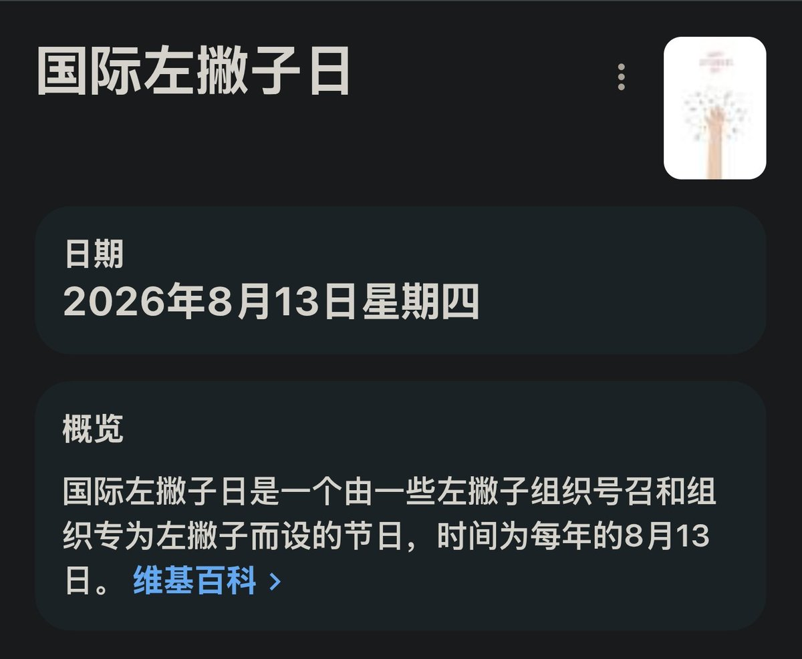

大狐帝国史官邹智萱（笔名段歌文）
@Rococo90933671
@Exusiai159 @Moutai_H_Maple 这是个人习惯，只要不要求别人，就不应该被管制。拜托，左撇子明明是物以稀为贵好不好？
我记得家里哪个大人跟我说我很小还没记忆的时候也是用左手，但是被纠正了。如果是真的，我希望是假的，因为从未拥有比曾经拥有好

一只能天使
@Exusiai159
@Moutai_H_Maple 上小学的时候有个女同学就是左撇子，后来被老师“强行纠正”过来了
他们的思维就是非我族类其心必异，所以我们才要让他们听见我们的声音 https://t.co/jGO2lsuXT0